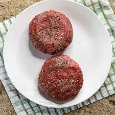

Baked Burger Patties

Description
Making a batch of hamburgers on a skillet can be a pain, and quite messy.
This recipe will produce perfectly medium-well done burger patties in the oven.
Ingredients
- 4-8oz patties made from 85% lean ground beef
- Salt
- Coffee Rub seasoning (trader joe's brand)
- 4 slices of sharp cheddar cheese (or other cheese of your liking)
Steps
- Heat oven to 425 degrees F
- Season beef liberally with salt and coffee seasoning
- Place seasoned patties in oven safe sheet pan
- Cook for 15 minutes, remove and immediately place cheese on top to melt
- Let patties rest for at least 3 minutes before eating
Home